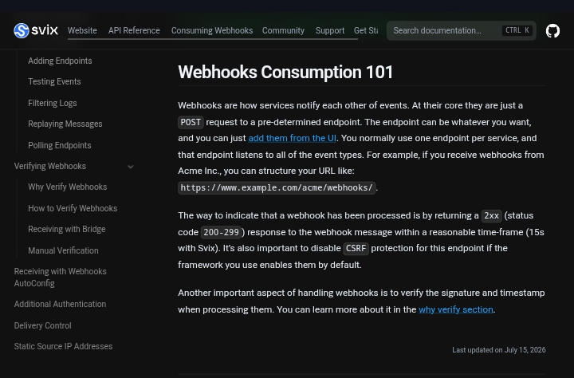

Svix Developer Onboarding Audit
Finding: Webhook acknowledgement is not explicitly distinguished from downstream business processing.
Finding: Webhook acknowledgement is not explicitly distinguished from downstream business processing.
Svix states that a webhook is considered processed when the receiving endpoint returns a 2xx response within a reasonable timeframe, with the page specifying 15 seconds. The same section separately instructs developers to verify the webhook's signature and timestamp. What the onboarding flow does not explicitly establish is the architectural distinction between acknowledging receipt of a webhook and completing the downstream business operation triggered by that webhook.
A developer may structure a webhook handler around the business operation:
Receive → validate → process business logic → return 2xx
That approach makes the HTTP acknowledgement dependent on the time required to complete the downstream operation. The documentation establishes the response-time requirement but does not explicitly connect it to the architectural decision of whether long-running business processing should happen synchronously inside the webhook request.
The webhook handler performs work that can take longer than the documented 15-second response window. For example:
Database operations
Calls to another API
Large processing jobs
Multiple dependent operations
Other substantial business logic
The underlying business operation can succeed while the webhook endpoint fails to acknowledge the delivery within the expected timeframe.
This creates two different states:
Application:
The business operation succeeded.
Webhook delivery:
The delivery was not acknowledged within the expected window.
Depending on the delivery behavior, that divergence can result in repeated delivery attempts and duplicate downstream work.
The architectural risk is therefore:
Webhook acknowledgement latency becomes coupled to business-processing latency.

Svix's Webhooks Consumption 101 section explicitly states that a webhook is considered processed when the endpoint returns a 2xx response within a reasonable timeframe (15s with Svix). The same section separately tells developers to verify the webhook's signature and timestamp. This establishes the documented acknowledgement requirement.
Explicitly distinguish delivery acknowledgement from business processing completion.
Show a recommended handler pattern that acknowledges the webhook before long-running work.
Provide an asynchronous processing example using a queue or background job.
Explain what developers should do when processing can exceed the acknowledgement window.
Provide an idempotency/deduplication pattern for downstream processing.
Make the acknowledgement deadline prominent in the initial webhook implementation flow.
A production integration can accidentally make webhook delivery reliability dependent on downstream business-processing latency. Slow handlers can therefore create additional delivery attempts, duplicate work, unnecessary infrastructure load, and difficult-to-diagnose incidents where the business operation succeeded but the webhook delivery system did not receive the expected acknowledgement.
This finding does not claim that Svix retries every webhook that exceeds 15 seconds. The reviewed page does not establish the exact retry behavior for every timeout or slow-response scenario. The defensible finding is narrower:
Svix establishes a time-bound HTTP acknowledgement contract but does not explicitly connect that contract to the architectural decision of whether downstream business processing should be synchronous or asynchronous.
Duplicate processing and unnecessary retries are real production noise, but they're recoverable with a standard idempotency pattern — not data loss or extended downtime. The trigger, though, is common: any handler doing real work (DB writes, API calls) before acknowledging will hit this, which is a very typical first implementation. Lower impact, high likelihood.